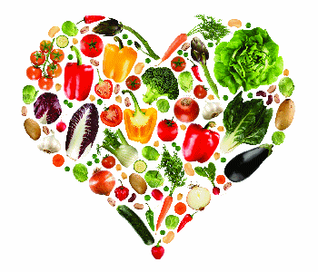

A College Students guide to living and maintaining a Healthy Lifestyle while on a busy schedule!

Your health is extremely important. Going to college may affect your health, so it is important that you learn some tips on how to stay healthy during your time there.
Try to do some type of physical activity everyday. At the least aim for 3 to 5 times a week. Excercise is one of the key components of being healthy. The basic elements of a well-rounded exercise session include cardio, strength and flexibility. Cardio is anything that gets your heart rate up. Strength is picking up those weights and putting your muscles to use, and flexibility is stretching.
Get Eating
In College this can be the most difficult task to tackle. Some tips are listed below:
80/20 rule. This is a healthy way to go about your diet. 80 percent of your diet should be healthy and 20 percent should be the occasional indulgence. It’s all about balance.
Portion Control. You don’t always need to finish the portion that is given you. Eat slowly and stop when you feel satisfied, not full. If you are eating out, try to only eat half of your meal and save the rest for another day.
Hydration. Water is always your best bet. If you want to change things up, try sparkling flavored water or add some diced fruit into your water bottle for a touch of sweetness. If you are hitting the bars with your friends, order mixed drinks with diet soda or seltzer water and be sure to avoid those super fruity cocktails.
Late night snacking After a long night it can be tempting to order a pizza with friends, so keep your dorm room stocked with granola bars, dried fruit and peanuts. They provide good energy to keep your brain functioning and won’t make you feel sluggish after consumption.
Get Relaxing
Getting enough rest is just as important as eating right and being active.
Sleep. Genting plenty of sleep is a huge solution to combat stress. If you don’t get enough sleep, you won’t recover properly from your workout sessions, and the longer you stay awake, the more likely you are to reach for an unhealthy snack option. Getting enough rests allows to be more alert and aware in you classes too!
De-Stress. It is important to take time for yourself and de-stress throughout the day. Every hour that you are working, take 10 minutes to lay back, put on your favorite song, and enjoy!
Breathe. Take a moment to step back from reality and just take a long, deep breath. We often forget to breathe when we are busy running around all day. It's amazing how much better you will feel after taking a few deep breathes.